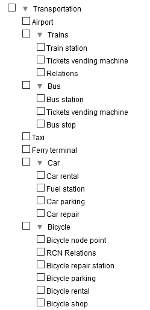

Travel & Notes - Installation guide
- Where to install Travel & Notes?
- Installation Guide for Nulls
- Installation guide for geeks
- What to do in the HTML file?
- Some additional explanations on Javascript
- The contents of the TravelNotesConfig.json file
- The contents of the TravelNotesLayers.json file
- The contents of the TravelNotesNoteDialogFR.json and TravelNotesNoteDialogEN.json file
- The contents of the configuration file that can be loaded with the button 📂 in the notes dialog
- "Search OpenStreetMap" settings
- Using the viewer
- Translations
- Plugins
1. Where to install Travel & Notes?
For security reasons, it is no longer possible to use Travel & Notes from a computer disc.
It is essential to go through either a remote web server, or a local LAMP or MAMP web server.
See https://www.mozilla.org/en-US/security/advisories/mfsa2019-21/#CVE-2019-11730
2. Installation Guide for Nulls
No great computer skills? Download the last version,
and install the contents of the docs/demo/ directory in a directory on your server and open the index.html file. That's all :-).
3. Installation guide for geeks
3.1. What to do in the HTML file?
Travel & Notes uses Leaflet to display the map. You must therefore download
and install Leaflet.
In the <head> of the html file, load the Leaflet and TravelNotes stylesheet:
<head>
...
<link rel="stylesheet" href="leaflet/leaflet.css" />
<link rel="stylesheet" href="TravelNotes.min.css" />
...
</head>
And in the <body> load Leaflet, TravelNotes and TravelNotes plugins
<body>
...
<script src="leaflet/leaflet.js"></script>
<noscript>Oh oh. Javascript is not enabled. It's impossible to display this page without javascript.</noscript>
<script src="TravelNotes.min.js"></script>
<!--
Route providers scripts for Mapbox, Stadia Maps (MapzenValhalla), GraphHopper and OpenRouteService have only to be installed
if you have an API key for Mapbox, Stadia Maps, GraphHopper or openRouteService.
Route providers scripts for OSRM, public transport and polyline have only to be installed
if you will work with these providers. -->
<script src="TravelNotesProviders/MapboxRouteProvider.min.js"></script>
<script src="TravelNotesProviders/MapzenValhallaRouteProvider.min.js"></script>
<script src="TravelNotesProviders/GraphHopperRouteProvider.min.js"></script>
<script src="TravelNotesProviders/OpenRouteServiceRouteProvider.min.js"></script>
<script src="TravelNotesProviders/OSRMRouteProvider.min.js"></script>
<script src="TravelNotesProviders/PublicTransportRouteProvider.min.js"></script>
<script src="TravelNotesProviders/PolylineRouteProvider.min.js"></script>
</body>
Travel & Notes will automatically create the map and all necessary controls.
3.2. Some additional explanations on Javascript
See the JS code documentation
for more information.
Note, however, that only the TravelNotes object is accessible from additional JS code
(via window.TaN - window.L.TravelNotes is deprecated but continues to work currently).
If you want to use other objects, you need to download the sources and import them into your code
as EcmaScript modules.
3.3. The contents of the TravelNotesConfig.json file
This file is used to modify certain behavior of TravelNotes. Be careful when editing this file.
You must follow all the rules for writing json files.
The contents of the TravelNotesConfig.json file:
- APIKeys.saveToSessionStorage : when this value is true, the API keys are saved in the 'sessionStorage' ( default value : true )
- APIKeysDialog.haveUnsecureButtons : when this value is true, buttons to save or restore the API keys in an unsecured file are present ( default value : false )
- APIKeysDialog.showAPIKeys : when this value is true, the API keys are readable in the dialog box ( default value : false )
- APIKeysDialog.showButton : when this value is true, the button 🔑 is present in the toolbar ( default value : true )
- colorDialog.haveSlider : when this value is true, the route properties dialog has a slider for the color red, otherwise it has buttons ( default value : true )
- colorDialog.initialRed : the initial value for the red slider ( default value : 0 )
- contextMenu.timeout : the time that will elapse, in milliseconds, between the moment when the mouse is no longer on the contextual menu and the moment when the menu closes automatically ( default value : 1500 )
- errorsUI.helpTimeOut : the time that will elapse, in milliseconds, between the moment a help message is displayed and the moment it is deleted ( default value : 30000 )
- errorsUI.showError : when this value is true, error messages are displayed ( default value : true )
- errorsUI.showHelp : when this value is true, help messages are displayed ( default value : false )
- errorsUI.showInfo : when this value is true, information messages are displayed ( default value : true )
- errorsUI.showWarning : when this value is true, warning messages are displayed ( default value : true )
- errorsUI.timeOut : the time that will elapse, in milliseconds, between the moment a message is displayed and the moment it is deleted ( default value : 10000 )
- geoCoder.distances.city : the maximum distance in meters between the point given by the user for an address and a point with the place=city tag in OSM, so that this tag is used in the address ( default value : 1200 )
- geoCoder.distances.hamlet : the maximum distance in meters between the point given by the user for an address and a point with the place=hamlet tag in OSM, so that this tag is used in the address ( default value : 200 )
- geoCoder.distances.town : the maximum distance in meters between the point given by the user for an address and a point with the place=town tag in OSM, so that this tag is used in the address ( default value : 1500 )
- geoCoder.distances.village : the maximum distance in meters between the point given by the user for an address and a point with the place=village tag in OSM, so that this tag is used in the address ( default value : 400 )
- geoCoder.osmCityAdminLevel.DEFAULT : the value used in the OSM admin_level tag for a municipality ( default value : 8 )
- geoCoder.osmCityAdminLevel.GB : The value used in the OSM admin_level tag for a municipality in a country that does not follow the OSM default rule. GB must be replaced by the ISO 3166-1 code of the country in question.
- geoLocation.marker.color : the color of the circle used to indicate the geolocation ( default value : #ff0000 )
- geoLocation.marker.radius : the radius of the circle used to indicate the geolocation ( default value : 10 )
- geoLocation.options.enableHighAccuracy : see the Javascript options of the geolocation functions ( default value : false )
- geoLocation.options.maximumAge : see the Javascript options of the geolocation functions ( default value : 0 )
- geoLocation.options.timeout : see the Javascript options of the geolocation functions ( default value : 3600000 )
- geoLocation.watch : when this value is true, the function watchPosition ( ) is used. Warning this function crash the geolocation with Firefox Android.
- geoLocation.zoomFactor : the zoom factor used for geolocation ( default value : 17 )
- geoLocation.zoomToPosition : when this value is true, a zoom on the position will be performed during the first geolocation ( default value : true )
- itineraryPaneUI.showManeuvers : when this value is true, the maneuvers are visible in the route description ( default value : false )
- itineraryPaneUI.showNotes : when this value is true, the notes are visible in the route description ( default value : true )
- itineraryPoint.marker.color : the color of the circle used to indicate a point on the route on the map ( default value : #ff0000 )
- itineraryPoint.marker.fill : the filling of the circle used to indicate a point on the route on the map ( default value : false )
- itineraryPoint.marker.radius : the radius of the circle used to indicate a point on the route on the map ( default value : 7 )
- itineraryPoint.marker.weight : the thickness of the circle used to indicate a point on the route on the map ( default value : 2 )
- itineraryPoint.zoomFactor : the zoom factor used when zooming on a point on the route ( default value : 17 )
- layersToolbarUI.haveLayersToolbarUI : when this value is true, the basemap toolbar is present ( default value : true )
- layersToolbarUI.toolbarTimeOut : the time that will elapse, in milliseconds, between the moment when the mouse is no longer on the toolbar and the moment when this toolbar closes automatically ( default value : 1500 )
- layersToolbarUI.theDevil.addButton : when this value is true, a button "theDevil" is added to the toolbar ( default value : true )
- map.center.lat : the latitude used for the center of the map at startup ( default value : 50.50923 )
- map.center.lng : the longitude used for the center of the map at startup ( default value : 5.49542 )
- map.zoom : the zoom used for the map at startup ( default value : 12 )
- mouseUI.haveMouseUI : when this value is true, a control is displayed at the top of the screen, indicating the coordinates of the mouse, the zoom value as well as the status of the save ( default value : true )
- nominatim.url : the url to use for Nominatim ( default value : "https://nominatim.openstreetmap.org/" )
- nominatim.language : the language to use for Nominatim ( default value : * )
- note.grip.size : the size of the handle at the end of a note's line ( default value : 10 )
- note.grip.opacity : the opacity of the handle at the end of a note's extension line - reminder : 0 = invisible ( default value : 0 )
- note.grip.moveOpacity : opacity of the handle at the end of a note's extension line when the mouse is over the handle ( default value : 1 )
- note.haveBackground : when this value is true, a white background is displayed with the note ( default value : false )
- note.maxManeuversNotes : the maximum number of notes that can be created with the command "Create a note for each route maneuver" ( default value : 100 )
- note.polyline.color : the color of a note's extension line ( default value : #808080 )
- note.polyline.weight : the thickness of a note's extension line ( default value : 1 )
- note.reverseGeocoding : when this value is true, the coordinates of the notes are replaced by an address ( default value : true )
- note.svgIcon.angleDistance : the minimum distance to use between the center of the SVG icon and the point in the route used to calculate the rotation of the icon ( default value : 10 )
- note.svgIcon.angleDirection.right : the maximum angle of the direction to follow for the indication "Turn right" in the tooltip of the SVG icons ( default value : 35 )
- note.svgIcon.angleDirection.slightRight : the maximum angle of the direction to follow for the indication "Turn slight right" in the tooltip of the SVG icons ( default value : 80 )
- note.svgIcon.angleDirection.continue : the maximum angle of the direction to follow for the indication "Continue" in the tooltip of the SVG icons ( default value : 100 )
- note.svgIcon.angleDirection.slightLeft : the maximum angle of the direction to follow for the indication "Turn slight left" in the tooltip of the SVG icons ( default value : 145 )
- note.svgIcon.angleDirection.left : the maximum angle of the direction to follow for the indication "Turn left" in the tooltip of the SVG icons ( default value : 200 )
- note.svgIcon.angleDirection.sharpLeft : the maximum angle of the direction to follow for the indication "Turn sharp left" in the tooltip of the SVG icons ( default value : 270 )
- note.svgIcon.angleDirection.sharpRight : the maximum angle of the direction to follow for the indication "Turn sharp right" in the tooltip of the SVG icons ( default value : 340 )
- note.svgIcon.rcnRefDistance : the greatest acceptable distance between the note and the OSM node with an rcn_ref key ( default value : 20 )
- note.svgIcon.roadbookFactor : the magnification factor of SVG icons in the roadbook ( default value : 6 )
- note.svgIcon.zoom : the zoom value used to make the SVG icons ( default value : 17 )
- noteDialog.areaHeight.icon : the number of lines in the icon edit area ( default value : 2 )
- noteDialog.areaHeight.popupContent : the number of lines in the text edit area ( default value : 8 )
- noteDialog.mask.iconsDimension : when this value is true, the icon dimension controls are hidden ( default value : true )
- noteDialog.mask.iconTextArea : when this value is true, the icon edit box is hidden ( default value : false )
- noteDialog.mask.tooltip : when this value is true, the tooltip edit box is hidden ( default value : false )
- noteDialog.mask.popupContent : when this value is true, the text edit box is hidden ( default value : false )
- noteDialog.mask.address : when this value is true, the address edit box is hidden ( default value : false )
- noteDialog.mask.link : when this value is true, the link edit box is hidden ( default value : false )
- noteDialog.mask.phone : when this value is true, the phone edit box is hidden ( default value : true )
- noteDialog.theDevil.addButton : when this value is true, a button "theDevil" is added to the edit dialog ( default value : true )
- noteDialog.theDevil.zoomFactor : the zoom used for the "theDevil" button ( default value : 17 )
- osmSearch.nextSearchLimit.color : the color of the polyline used to indicate on the map the area of the next search ( default value : "#ff0000" )
- osmSearch.nextSearchLimit.fill : the filling of the polyline used to indicate on the map the area of the next search ( default value : false )
- osmSearch.nextSearchLimit.weight : the thickness of the polyline used to indicate on the map the area of the next search ( default value : 1 )
- osmSearch.previousSearchLimit.color : the color of the polyline used to indicate on the map the area of the last search performed ( default value : "#006400" )
- osmSearch.previousSearchLimit.fill : the filling of the polyline used to indicate on the map the area of the last search performed ( default value : false )
- osmSearch.previousSearchLimit.weight : the thickness of the polyline used to indicate on the map the area of the last search performed ( default value : 1 )
- osmSearch.searchPointMarker.color : the color of the circle used to indicate on the map the position of a search result when this result is in the form of a point ( default value : "#006400" )
- osmSearch.searchPointMarker.fill : the filling of the circle used to indicate on the map the position of a search result when this result is in the form of a point ( default value : false )
- osmSearch.searchPointMarker.radius : the radius of the circle used to indicate on the map the position of a search result when this result is in the form of a point ( default value : 20 )
- osmSearch.searchPointMarker.weight : the thickness of the circle used to indicate on the map the position of a search result when this result is in the form of a point ( default value : 4 )
- osmSearch.searchPointPolyline.color : the color of the polyline used to indicate on the map the position of a search result when that result is in the form of a polyline ( default value : "#006400" )
- osmSearch.searchPointPolyline.fill : the filling of the polyline used to indicate on the map the position of a search result when that result is in the form of a polyline ( default value : false )
- osmSearch.searchPointPolyline.weight : the thickness of the polyline used to indicate on the map the position of a search result when that result is in the form of a polyline ( default value : 4 )
- osmSearch.showSearchNoteDialog : when this value is true, the edit notes dialog box is displayed when a note is created from a search result ( default value : false )
- overpassApi.useNwr : some OverpassAPIOverpassAPI don't know the nwr instruction. When the case, set useNwr = false ( default value: true )
- overpassApi.timeOut : the time that will elapse, in seconds, between the moment when a request to OverpassAPI is launched and when a timeout will be triggered ( default value : 40 )
- overpassApi.url : the url to use for OverpassAPI ( default value : "https://lz4.overpass-api.de/api/interpreter" )
- paneUI.switchToItinerary : the route panel is activated each time the route is modified ( default value: false )
- paneUI.switchToTravelNotes : the travel notes panel is activated each time a note is modified ( default value: false )
- paneUI.switchToSearch : the OSM search panel is activated each time it is updated ( default value: true )
- printRouteMap.firefoxBrowser : when this value is true, the command uses css for firefox by default
- printRouteMap.isEnabled : when this value is true, the command to print the maps of a route is active ( default value : true )
- printRouteMap.borderWidth : the width in millimeters of the map edge that will be duplicated in each map ( default value : 10 )
- printRouteMap.maxTiles : the maximum number of tiles that can be used to print a route ( default value : 720 )
- printRouteMap.paperWidth : the width of the paper in millimeters ( default value : 287 )
- printRouteMap.paperHeight : the height of the paper in millimeters ( default value : 200 )
- printRouteMap.printNotes : when this value is true, the notes icon is also printed ( default value : true )
- printRouteMap.zoomFactor : the zoom factor to use for printing ( default value : 15 )
- printRouteMap.entryPointMarker.color : the color of the start of route marker on each map ( default value : "#00ff00" )
- printRouteMap.entryPointMarker.weight : the tickness of the start of route marker on each map ( default value : 4 )
- printRouteMap.entryPointMarker.radius : the radius of the start of route marker on each map ( default value : 10 )
- printRouteMap.entryPointMarker.fill : the filling of the start of route marker on each map ( default value : true )
- printRouteMap.entryPointMarker.fillOpacity : the filling opacity of the start of route marker on each map ( default value : 1 )
- printRouteMap.exitPointMarker.color : the color of the end of route marker on each map ( default value : "#ff0000"
- printRouteMap.exitPointMarker.weight : the tickness of the end of route marker on each map ( default value : 4 )
- printRouteMap.exitPointMarker.radius : the radius of the end of route marker on each map ( default value : 10 )
- printRouteMap.exitPointMarker.fill : the filling of the end of route marker on each map ( default value : true )
- printRouteMap.exitPointMarker.fillOpacity : the filling opacity of the end of route marker on each map ( default value : 1 )
- route.color : the default color of a route ( default value : "#ff0000" )
- route.dashArray : the line type to use by default = a number corresponding to the line type index in the dashChoices array ( default value : 0 )
- route.dashChoices : an array with the different types of lines displayed in the RoutesPropertiesDialog dialog box.
Text will be displayed in the linetype selector and iDashArray is the linetype template.
Warning: the values in this array are numerical values and will be multiplied by the line thickness (width) and transformed into text before being used to adapt the line type
( default value : "[ { text : "——————" , iDashArray : [0] }, { text : "—————", iDashArray : [ 4, 2 ] }, { text : "—‧—‧—‧—‧—" , iDashArray : [ 4, 2, 0, 2] }, { text : "················", iDashArray : [ 0,2 ] } ]" )
- route.elev.smooth : when this value is true, the profile of the route is smoothed ( default value : true )
- route.elev.smoothCoefficient : a coefficient used to calculate the distance between two points for the smoothing of the elevation ( default value : 0.25 )
- route.elev.smoothPoints : the number of points before and after the current point in the smoothing calculations ( default value : 3 )
- route.showDragTooltip : the number of times the tooltip displayed when adding a waypoint is shown ( -1 = always ; default value : 0 )
- route.width : the default thickness of a route ( default value : 5 )
- routeEditor.showEditedRouteInRoadbook : when this value is true the modifications of the route being edited will be immediately imported into the roadbook ( default value : true )
- travelEditor.startMinimized : when this value is true, Travel & Notes is displayed in reduced form at startup ( default value : true )
- travelEditor.startupRouteEdition : when this value is true, a route is directly edited when loading a new travel ( default value : true )
- travelEditor.timeout : the time that will elapse, in milliseconds, between the moment when the mouse is no longer in Travel & Notes and the moment when it is reduced ( default value : 1500 )
- travelNotes.autoLoad : when this value is true, the map and all the controls are built automatically when the Travel & Notes javascript is loaded( default value : true )
- travelNotes.haveBeforeUnloadWarning : when this value is true, a confirmation message is displayed each time the travel being edited is going to be deleted ( default value : true )
- travelNotes.language : the language used by Travel & Notes, unless another language is specified in the url ( default value : "fr" )
- travelNotesToolbarUI.contactMail.url : the email address used in the contact button ( default value : "https://github.com/wwwouaiebe/TravelNotes/issues" )
- wayPoint.reverseGeocoding : when this value is true, the coordinates of the waypoints are replaced by an address ( default value : true )
- wayPoint.geocodingIncludeName : when this value is true, a name is if possible added to the address ( default value : true )
3.4. The contents of the TravelNotesLayers.json file
This file contains the definitions of background maps of the "Maps" toolbar
These definitions can be adapted.
A sample file with two different background maps, one with the Ferraris map
of Belgium in 1771, the other with the Thunderforest OpenCycleMap map
[
{
"service":"wms",
"url":"http://geoservices.wallonie.be/arcgis/services/CARTES_ANCIENNES/FERRARIS/MapServer/WMSServer",
"wmsOptions":
{
"layers":"0",
"format":"image/png",
"transparent":true
},
"bounds":[ [ 49.15, 2.56 ], [ 50.95, 6.49 ] ],
"minZoom":7,
"name":"Service Public de Wallonie - Ferraris map 1770 - 1776",
"toolbar":
{
"text":"1771",
"color":"black",
"backgroundColor":"white"
},
"providerName":"SPW",
"providerKeyNeeded":false,
"attribution":"| <a href='http://geoportail.wallonie.be/home.html' target='_blank'>Service public de Wallonie (SPW)</a>",
"getCapabilitiesUrl":"https://geoservices.wallonie.be/arcgis/services/CARTES_ANCIENNES/FERRARIS/MapServer/WMSServer?REQUEST=GetCapabilities&SERVICE=WMS"
},
{
"service":"wmts",
"url":"https://{s}.tile.thunderforest.com/cycle/{z}/{x}/{y}.png?apikey={providerKey}",
"name":"Thunderforest - OpenCycleMap",
"toolbar":
{
"text":"🚴",
"color":"black",
"backgroundColor":"white"
},
"providerName":"Thunderforest",
"providerKeyNeeded":true,
"attribution":"| Tiles courtesy of <a href='http://www.thunderforest.com/' target='_blank' title='Andy Allan'>Andy Allan</a> "
}
]
Some explanations on the content of the file for each background map
- service : the type of service: wms or wmts
- url: the url to use to get the map. The values {s}, {x}, {y} and {z} will be replaced by
Leaflet, the value {providerKey} will be replaced by Travel & Notes by the possible access key
for service. Never replace {providerKey} directly with your own access key !!!
- wmsOptions : these are the options to pass to Leaflet for a wms service.
See the Leaflet TileLayer.WMS documentation.
At a minimum, "layers", "format" and "transparent" should be present.
- bounds : the lower left and upper right corner of the map.
- minZoom : the smallest possible zoom for this map
- maxZoom : the largest possible zoom for this map
- name : the name of the map. It will be used in the tooltip of the button in the maps toolbar.
- toolbar.text : the text to display in the maps toolbar button
- toolbar.color : the foreground color of the maps toolbar button
- toolbar.backgroundColor : the background color of the maps toolbar button
- providerName : the name of the service provider. This name will be used to find the access key to the service and must therefore be identical to the name provided in the file or in the API keys dialog box.
- providerKeyNeeded : when this value is true, an access key is required to get the map.
- attribution : the map attributions. For maps based on OpenStreetMap, it is not necessary to add
the attributions of OpenStreetMap because they are always present in Travel & Notes.
- getCapabilitiesUrl : the url of the getCapabilities file when it is known.
3.5. The contents of the TravelNotesNoteDialogFR.json and TravelNotesNoteDialogEN.json file
This file contains the definitions of the buttons and list of predefined icons of the note editing box.
These definitions can be adapted to your needs.
Sample file with 3 buttons and 2 predefined icons:
{ "editionButtons" :
[
{
"title" : "<span class='TravelNotes-Note-WhiteRed' title='Insert a red background'>Red</span>",
"htmlBefore" : "<span class='TravelNotes-Note-WhiteRed'>",
"htmlAfter" : "</span>"
},
{
"title" : "<span class='TravelNotes-Note-WhiteGreen' title='Insert a green background'>Green</span>",
"htmlBefore" : "<span class='TravelNotes-Note-WhiteGreen'>",
"htmlAfter" : "</span>"
},
{
"title": "Ø",
"htmlBefore": "Ø"
}
],
"preDefinedIconsList" :
[
{
"name" : "Bikes allowed",
"icon" : "<div class='TravelNotes-MapNote TravelNotes-MapNoteCategory-0005'></div>",
"tooltip" : "Bikes allowed",
"width" : 40,
"height" : 40
},
{
"name" : "Bus station",
"icon" : "<div class='TravelNotes-MapNote TravelNotes-MapNoteCategory-0006'></div>",
"tooltip" : "Bus station",
"width" : 40,
"height" : 40
}
]
}
Two collections of objects must be present in the file: "editionButtons" for the additional
buttons and "preDefinedIconsList" for the predefined icons. These collections may be empty
but must be present.
Each object in the "editionButtons" collection has two or three properties;
- title : the text that will appear on the button in the dialog box
- htmlBefore : the text that will be inserted before the selection when the button is clicked
- htmlAfter : the text that will be inserted after the selection when the button is clicked.
This property is optional.
Each object in the "preDefinedIconsList" collection has five properties:
- name : the name that will be displayed in the drop-down list (text)
- icon : the content of the icon (html)
- tooltip : the content of the tooltip (html)
- width : the width of the icon in pixels
- height : the height of the icon in pixels
3.6. The contents of the configuration file that can be loaded with the button 📂 in the notes dialog
The organization of this file is identical to the files TravelNotesNoteDialogFR.json and TravelNotesNoteDialogEN.json
3.7. "Search OpenstreetMap" settings
The TravelNotesSearchDictionaryFR.csv (in French) or TravelNotesSearchDictionaryEN.csv (in English) file contains all the information needed to configure the search in OpenStreetMap. The file can be edited with LibreOffice or any other program capable of reading CSV files.
The file must be saved with Unicode as the character set and encoded in utf-8. the semicolon must be used as a separator.
The tree structure as it is visible in Travel & Notes:

And the contents of the file with the same tree structure (cells with a light red background):

The cells with a light yellow, light green or light blue background represent the tags of the objects to be searched in OpenStreetMap.
- on yellow background, simple cases where a single tag is sufficient to search for the objects. The key and the desired value are indicated in the cell, separated by an = sign.
- on a green background, more complex cases where several keys / values are necessary to select an object. These different keys / values are shown on a single line and must be
ALL checked to select the object in OpenStreetMap ( logical AND ).
- on a blue background, cases where several keys / values are possible. These different keys / values are indicated on several lines
and a single key / verified value is enough to select the object in OpenStreetMap ( logical OR ).
- when you want to limit the search to a single type of OpenStreetMap element, you must specify it in an additional cell ( element=node or element=way or element=relation ).
- when all the values of a tag are acceptable, the key must be indicated, followed by the equal sign followed by the sign *.
4. Using the viewer
The viewer allows you to view files that have been made with TravelNotes. It does not have
controls or menus and therefore does not allow modification of a travel. Its interest lies in the fact that it does not use too much JavaScript and that it is lighter than TravelNotes
It installs like Travel & Notes, with two tags <link> and two tags <script>
one for Leaflet and the other for the viewer.
<!DOCTYPE html>
<html>
<head>
<meta charset="UTF-8" />
<meta name="viewport" content="width=device-width, initial-scale=1.0" />
<meta name="ROBOTS" content="NOINDEX, NOFOLLOW" />
<title>Travel & Notes by wwwouaiebe</title>
<link rel="stylesheet" href="leaflet/leaflet.css" />
<link rel="stylesheet" href="TravelNotesViewer.min.css" />
</head>
<body>
<script src="leaflet/leaflet.js"></script><noscript>Oh oh. Javascript is not enabled. It's impossible to display this page without javascript.</noscript>
<script src="TravelNotesViewer.min.js"></script>
</body>
</html>
The TravelNotesViewer.min.css and TravelNotesViewer.min.js files as well as the configuration JSON
files are in the "viewer" sub-directory
5. Translations
Travel & Notes is translated into 'fr' and 'en'. If you want to translate Travel & Notes into
another language, copy the TravelNotesEN.json file and rename it according to the language used. Then,
edit this file and translate all the lines in the desired language.
To load Travel & Notes in another language, add to the url lng = and the language to use
(example to use Travel & Notes in english: https://wwwouaiebe.github.io/TravelNotes/?lng=en.)
The organization of these files is as close as possible to that of
GNU getText
6. Plugins
To use a plugin, simply load it from the html page using the tag